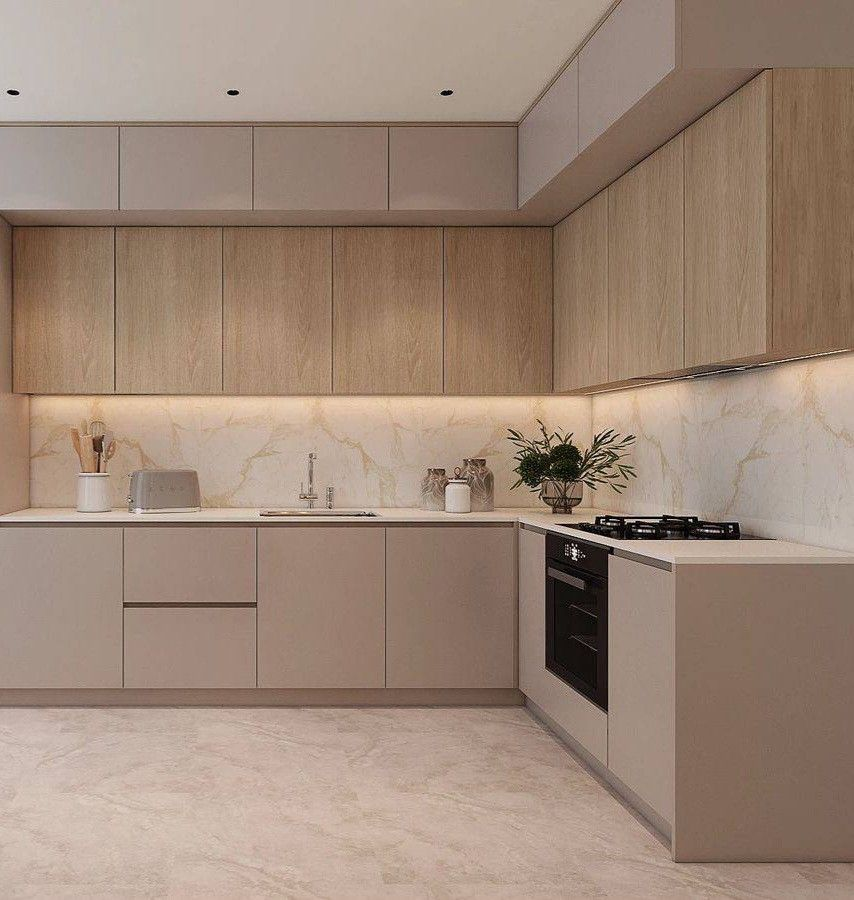
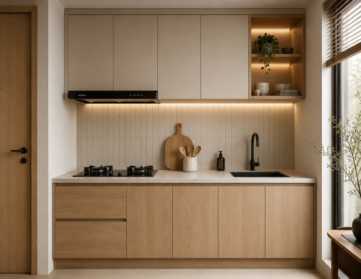
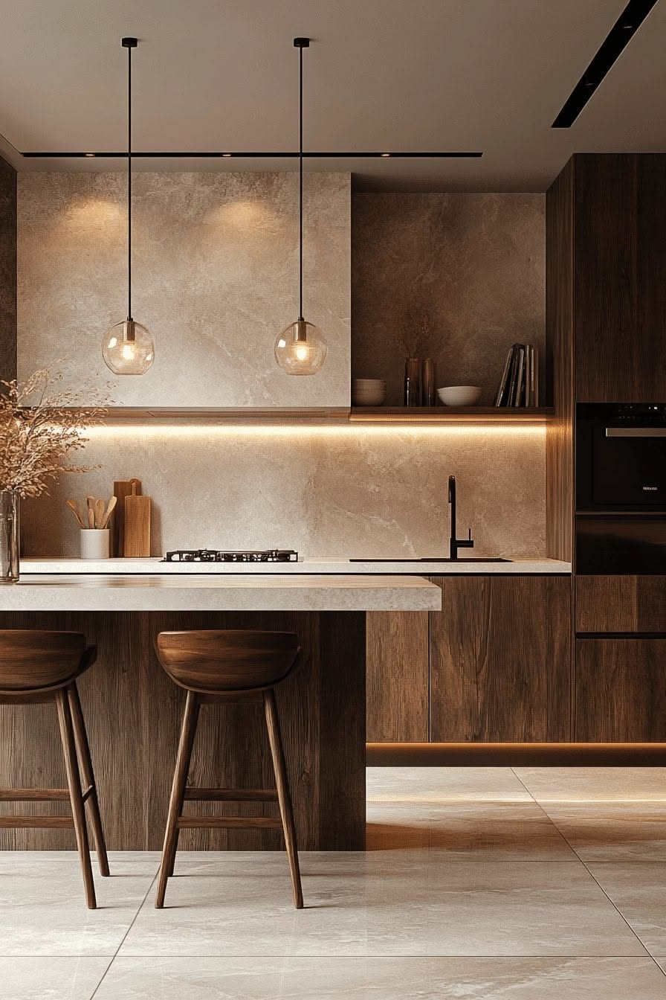

North Queensland
Architectural kitchens
for Townsville.
Specified for humidity and a rental market that turns over every posting cycle.

Humidity decides how long a kitchen lasts
Townsville runs hot and humid for a long stretch of the year, and in that climate the failure points are predictable: particleboard swelling where water reaches an unsealed edge, laminate lifting, and metal corroding.
That is why the benchtop range here is quartz and granite with no laminate and no timber option — those are the two surfaces most likely to move. And it is why hardware brand matters more than it does further south: Blum hinges and runners are standard on every cabinet rather than a paid upgrade.
None of that makes a kitchen immune. Keep the extraction working and wipe up standing water at the sink. But the specification starts from a much better place than a builder-grade fitout does.
Defence postings keep the rental market moving
Townsville hosts one of Australia's largest defence concentrations, and posting cycles keep a substantial share of the housing stock in rental. That means a lot of kitchens needing a quick refit to a rentable standard without over-capitalising.
Being able to price the whole job on screen before committing is worth more in that market than in most, because the sums are tight and the decision is commercial rather than emotional.
The ranges
Complete kitchens, from $4,490.
Every range includes carcasses, doors, Blum hardware and a quartz or granite benchtop. Marble is available as a paid upgrade. There is no laminate and no timber benchtop.

Compact
2400 mm run
$4,590
A galley or single run. Units, doors, hardware, benchtop.
Granny flat
2700 mm run
$5,500
Sized for a secondary dwelling or a converted under-house space.

Tiny home
3000 mm run
$7,500
A full working kitchen in a footprint that has to earn every millimetre.
Questions
Townsville, specifically.
Do you deliver to Townsville?
Yes, to Townsville and across North Queensland. Everything ships direct from our base.
Will the cabinetry cope with the humidity?
Benchtops are quartz and granite only — no laminate, no timber — because those are the surfaces that swell and lift in constant humidity. Blum hinges and runners are standard, which is the part that corrodes first in a tropical climate.
Is it suitable for a rental between postings?
Yes, and it is a common use here. The specification is chosen to survive turnover, and the 2 400 mm Compact range starts at $4,590 complete.
How is freight handled this far north?
Everything ships direct from our base, flat-packed, which travels far better over distance than assembled cabinets. Freight is quoted per order once a team member has checked your 3D plan.
Draw it. See the price.
No showroom appointment, no sales visit, and no waiting on a quote. Draw your room, watch the number move, and take the cut list away.
Wide Bay and the north
Also delivering nearby.
-
Bundaberg
Queenslanders in a humid coastal region, on a budget that has to be visible up front.
-
Hervey Bay
One of the oldest population profiles in Australia — where drawer height matters more than door colour.
-
Cairns
Tropical damp, holiday lets and a long freight run — where flat-packing earns its keep twice.
See every town across Queensland.